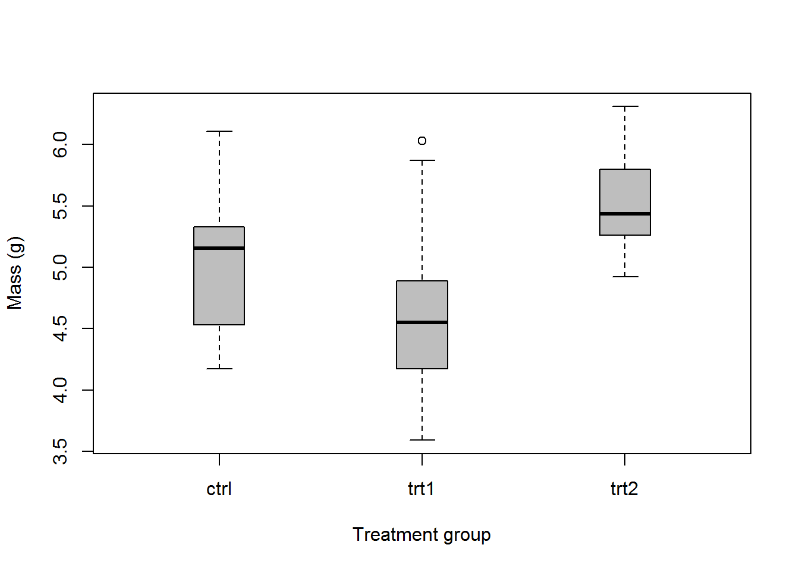
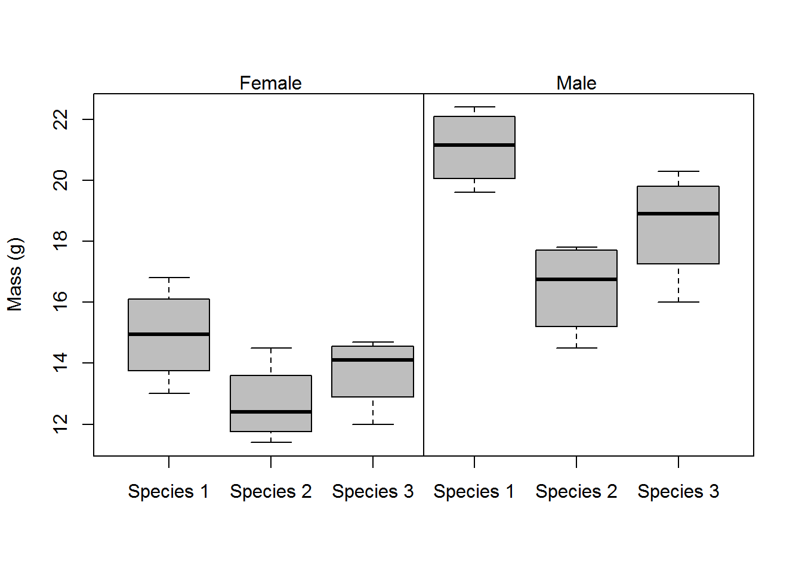
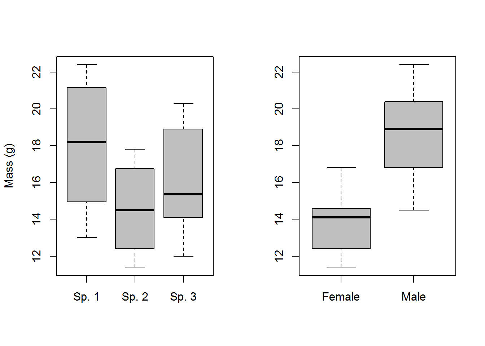

One-way ANOVA
We will use some of the built-in datasets in R this week to demonstrate our analyses and show how to communicate the methods and the results of our statistical inference.
Let’s start by loading up the PlantGrowth dataset in R:
Here, we see that we have a dataframe with 30 observations of two variables. The first variable describes plant growth (in units of mass), and the second variable describes control and treatment groups for individual plants.
## 'data.frame': 30 obs. of 2 variables:
## $ weight: num 4.17 5.58 5.18 6.11 4.5 4.61 5.17 4.53 5.33 5.14 ...
## $ group : Factor w/ 3 levels "ctrl","trt1",..: 1 1 1 1 1 1 1 1 1 1 ...
Let’s begin by fitting a simple one-way ANOVA to the plant data. In practice, this is very easy. First of all though, we would report our methods like this:
We used a one-way analysis of variance (ANOVA) to estimate the effects of treatment group on the mass (g) of plants assuming a Type-I error rate of \(\alpha\) = 0.05. Differences between groups were assumed to be significant at p < 0.05.
# Fit the model
model = lm(weight~group, data=PlantGrowth)
# Print the model object to the console
model
##
## Call:
## lm(formula = weight ~ group, data = PlantGrowth)
##
## Coefficients:
## (Intercept) grouptrt1 grouptrt2
## 5.032 -0.371 0.494
Easy to do, but not very useful for getting the information that we need. What we get here is essentially just one part of the information that we would like to (read ‘should’) report.
If we look at the summary of the output, we can get more of what we need:
# Look at a summary of the model object
summary(model)
##
## Call:
## lm(formula = weight ~ group, data = PlantGrowth)
##
## Residuals:
## Min 1Q Median 3Q Max
## -1.0710 -0.4180 -0.0060 0.2627 1.3690
##
## Coefficients:
## Estimate Std. Error t value Pr(>|t|)
## (Intercept) 5.0320 0.1971 25.527 <2e-16 ***
## grouptrt1 -0.3710 0.2788 -1.331 0.1944
## grouptrt2 0.4940 0.2788 1.772 0.0877 .
## ---
## Signif. codes: 0 '***' 0.001 '**' 0.01 '*' 0.05 '.' 0.1 ' ' 1
##
## Residual standard error: 0.6234 on 27 degrees of freedom
## Multiple R-squared: 0.2641, Adjusted R-squared: 0.2096
## F-statistic: 4.846 on 2 and 27 DF, p-value: 0.01591
That’s better, and we get some useful information here. First of all, we get the value of the test statistic, the df, and the p-value for the model. We also get the \(R^2\) for the model: 0.26. This statistic tells us roughly what percentage of the total variance in the data is explained by the model we fit. Another way of thinking of this is as a signal-to-noise ratio. More formally, it is the sum of squares between groups divided by the sum of squares total:
\[R^2 = \frac{SSB}{SST}\]
Let’s use the anova function to summarize the object a little further.
# Get an ANOVA table for the model
anova(model)
## Analysis of Variance Table
##
## Response: weight
## Df Sum Sq Mean Sq F value Pr(>F)
## group 2 3.7663 1.8832 4.8461 0.01591 *
## Residuals 27 10.4921 0.3886
## ---
## Signif. codes: 0 '***' 0.001 '**' 0.01 '*' 0.05 '.' 0.1 ' ' 1
Okay, this is really what we needed: an ANOVA table with a break down of the residuals, mean squared errors, etc. And, we can now say:
We found that the treatment had a significant effect on plant weight (ANOVA, F = 4.846, df1 = 2, df2 = 27, p = 0.0159).
NOTE that all of these statistics were present in the summary of the model, as well. They just weren’t neatly organized, and we would need to do the calculations by hand to drag them out of it.
But, what if we want to know more about how treatment affected weight? Then, we could use a ‘pair-wise’ comparison to test for differences between factor levels. Because this essentially means conducting a whole bunch of t-tests, we need a way to account for our repeated Type-I error rate, because at \(\alpha\) = 0.05 we stand a 1 in 20 chance of falsely rejecting the null even if it is true.
One tool that lets us make multiple comparisons between groups is the Tukey HSD (honest significant difference) test. This test makes comparisons between each group while controlling for Type-I error. Essentially, this makes it harder to detect differences between groups but when we do we are more sure that they are not spurious. Sound confusing? At least it’s easy to do in R.
# We need to recast this as an ANOVA model with avo() in R...
# this is essentially the same thing as the `lm` function, but
# in a different wrapper (literally) that allows us to access
# the info in a different way
TukeyHSD( # The function that does the Tukey test
aov( # A wrapper for lm objects
model # The model that we ran above
)
)
## Tukey multiple comparisons of means
## 95% family-wise confidence level
##
## Fit: aov(formula = model)
##
## $group
## diff lwr upr p adj
## trt1-ctrl -0.371 -1.0622161 0.3202161 0.3908711
## trt2-ctrl 0.494 -0.1972161 1.1852161 0.1979960
## trt2-trt1 0.865 0.1737839 1.5562161 0.0120064
This report shows us exactly how the response differs with respect to the treatment groups. Here, we see that the only significant difference occurs between trt2 and trt1. How do we know this? based on the p-values…
For the readers, and for us, it may be easier to see this information displayed graphically:
# Make a boxplot of weight by group using the PlantGrowth data
boxplot(
weight~group, # Relationship of interest, entered as formula with '~'
data=PlantGrowth, # Name of the data set
col='gray', # Fill color for boxes
ylab='Mass (g)', # Y-axis label
xlab='Treatment group' # X-axis label
)

In addition to what we wrote before, we can now say something along the lines of:
“We found that the mass of plants in the trt2 group (5.5 +/- .4 g) was significantly greater than plants in the trt1 group (4.7 +/- .8 g; Tukey HSD, p = 0.012). However, we failed to detect differences in mass between plants in the control group (5.0 +/- 0.6 g) and trt1 (p = 0.39) or trt2 (p = 0.20).
Two-way ANOVA
Next, we’ll step up the complexity and talk about cases for which we have more than one grouping variable and some kind of numeric response. In these cases, we can use a two-way (or ‘n-way’ depending on number of factors) ANOVA to examine effects of more than one grouping variable on the response.
Here, we will use a dataset describing differences in the mass of belly- button lint collected from males and females of three species of apes.
# Read in the data:
lint = read.csv('http://employees.oneonta.edu/stichds/data/lint.txt')
Main effects model
Now we can fit a model to the data. This will work the same way as for the one-way ANOVA above, but this time we will add more terms on the right hand side of the equation. We will start by looking at the main effects model for this dataset.
What is a main-effects model? This model assumes that the response of interest, in this case the mass of belly button lint, lintmass, is affected by both species and gender, and that within species the effect of gender is the same. For example, the mass of belly button lint could be greater in one species compared to others, and if there is a difference between sexes we would expect that trend to be the same across species (e.g., boys always have more lint than girls- sorry guys, it’s probably true!).
# Fit the model and save it to an object
lint.model = lm(lintmass~species + gender, data=lint)
# Look at the summary of the model fit
summary(lint.model)
##
## Call:
## lm(formula = lintmass ~ species + gender, data = lint)
##
## Residuals:
## Min 1Q Median 3Q Max
## -2.5792 -0.9021 0.0875 0.8448 2.3917
##
## Coefficients:
## Estimate Std. Error t value Pr(>|t|)
## (Intercept) 15.5458 0.6133 25.346 < 2e-16 ***
## speciesSpecies 2 -3.4375 0.7512 -4.576 0.000183 ***
## speciesSpecies 3 -1.8750 0.7512 -2.496 0.021414 *
## genderMale 4.9083 0.6133 8.003 1.16e-07 ***
## ---
## Signif. codes: 0 '***' 0.001 '**' 0.01 '*' 0.05 '.' 0.1 ' ' 1
##
## Residual standard error: 1.502 on 20 degrees of freedom
## Multiple R-squared: 0.8096, Adjusted R-squared: 0.781
## F-statistic: 28.35 on 3 and 20 DF, p-value: 2.107e-07
# Print the anova table
anova(lint.model)
## Analysis of Variance Table
##
## Response: lintmass
## Df Sum Sq Mean Sq F value Pr(>F)
## species 2 47.396 23.698 10.499 0.0007633 ***
## gender 1 144.550 144.550 64.041 1.16e-07 ***
## Residuals 20 45.143 2.257
## ---
## Signif. codes: 0 '***' 0.001 '**' 0.01 '*' 0.05 '.' 0.1 ' ' 1
As you can see, the output for the model is much the same as for the one- way ANOVA. The only real difference is that we have more than one grouping variable here.
We could look at the data all at once, but this gets a bit messy:
# Make the boxplot to start with
boxplot(formula=lintmass~species+gender, # Formula
data=lint, # The data set
col='gray', # Color for box fill
ylab='Mass (g)', # Label for y-axis
names=rep(c('Species 1', 'Species 2', 'Species 3'), 2)
)
# Add a vertical line to separate sexes
abline(v=3.5, col='black', lwd=1)
# Label sexes at the top of the plot
mtext(text='Female', side=3, at = c(23, 2))
mtext(text='Male', side=3, at = c(23, 5))

So, we can also look at the factors seperately:
# Set the plotting window so it can fit two boxplots side by side
par(mfrow=c(1,2))
# Add the first boxplot to the plotting window
boxplot(formula=lintmass~species,
data=lint,
col='gray',
ylab='Mass (g)',
names = c('Sp. 1', 'Sp. 2', 'Sp. 3')
)
# Add the second boxplot
boxplot(lintmass~gender,
data=lint,
col='gray',
ylab='',
names=c('Female', 'Male')
)

Hopefully after seeing these results you are now starting to realize how important a few well-placed figures and tables can be for clearly communicating the results of your research (even if it is about belly-button lint).
Interaction terms
The n-way ANOVA is the first kind of model we have used in which it is possible to consider interactions between two factors. An interaction is a situation that occurs when the effects of two or more factors is not additive. This means that the effect of gender might change for different species. For example, let us consider the following scenario in the lint data.
Perhaps we hypothesize that lint accumulation in the belly buttons of females differs in pattern from males due to social grooming patterns and sex-specific behavioral patterns favoring females. As a result, we might expect that sex and species could have some kind of non-additive effect on lint mass in these apes. To test this, we would use the following:
# Fit a new model that includes an interaction, signified by '*'
lint.modeli = lm(lintmass~species * gender, data=lint)
summary(lint.modeli)
##
## Call:
## lm(formula = lintmass ~ species * gender, data = lint)
##
## Residuals:
## Min 1Q Median 3Q Max
## -2.525 -0.750 0.050 1.019 1.875
##
## Coefficients:
## Estimate Std. Error t value Pr(>|t|)
## (Intercept) 14.9250 0.7404 20.159 8.40e-14 ***
## speciesSpecies 2 -2.2500 1.0471 -2.149 0.0455 *
## speciesSpecies 3 -1.2000 1.0471 -1.146 0.2668
## genderMale 6.1500 1.0471 5.874 1.46e-05 ***
## speciesSpecies 2:genderMale -2.3750 1.4808 -1.604 0.1261
## speciesSpecies 3:genderMale -1.3500 1.4808 -0.912 0.3740
## ---
## Signif. codes: 0 '***' 0.001 '**' 0.01 '*' 0.05 '.' 0.1 ' ' 1
##
## Residual standard error: 1.481 on 18 degrees of freedom
## Multiple R-squared: 0.8335, Adjusted R-squared: 0.7873
## F-statistic: 18.03 on 5 and 18 DF, p-value: 1.898e-06
## Analysis of Variance Table
##
## Response: lintmass
## Df Sum Sq Mean Sq F value Pr(>F)
## species 2 47.396 23.698 10.8079 0.0008253 ***
## gender 1 144.550 144.550 65.9253 1.983e-07 ***
## species:gender 2 5.676 2.838 1.2943 0.2984104
## Residuals 18 39.468 2.193
## ---
## Signif. codes: 0 '***' 0.001 '**' 0.01 '*' 0.05 '.' 0.1 ' ' 1
Alas, in the case of the lint model, this interaction is not significant, so we now have some evidence to suggest that either our hypothesis or our experimental design (or both) were flawed.
Note that the n-way ANOVA is also the framework within which the randomized block design is implemented. We will not cover that in this course as the implementation is identical to that above and virtually none of you will ever have any occasion to actually use a randomized block design.